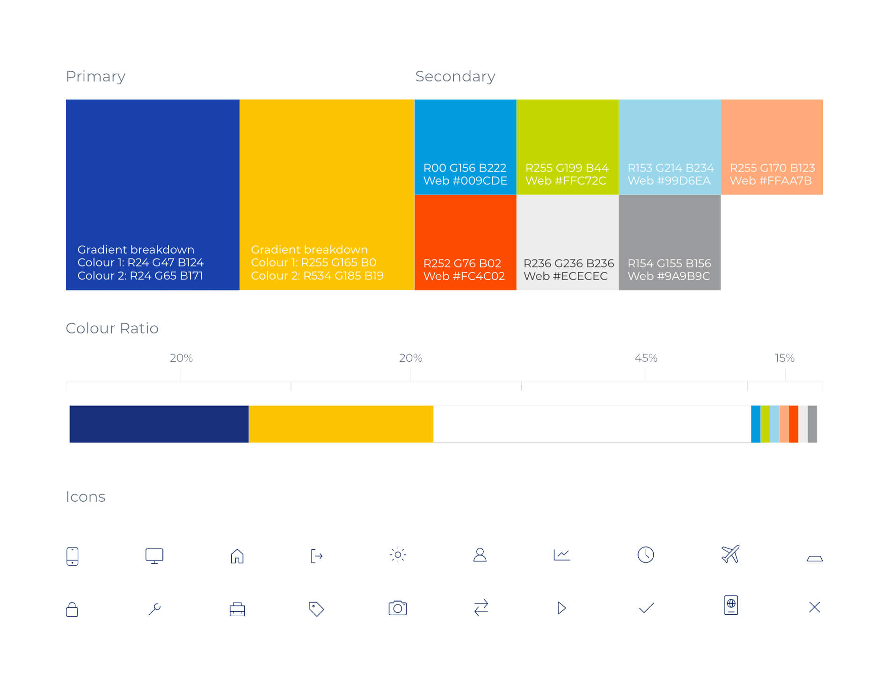

Emirates NBD releases annual ‘Sustainability Reports’ and uploads it onto the related web-page. The issue was that the report contains 12 sections with numbers of pages of information in a single PDF file which was over 100MB big to download. The web-analytics data summary confirmed the obvious low rate of page visits and downloads of the file.
I came up with the solution to divide the report into separate PDF files and design a landing page with 12 sections each related to individual information from the original report. Now users can download the information they need in small size while viewing through the fast-loading nice microsite.
I came up with the solution to divide the report into separate PDF files and design a landing page with 12 sections each related to individual information from the original report. Now users can download the information they need in small size while viewing through the fast-loading nice microsite.
